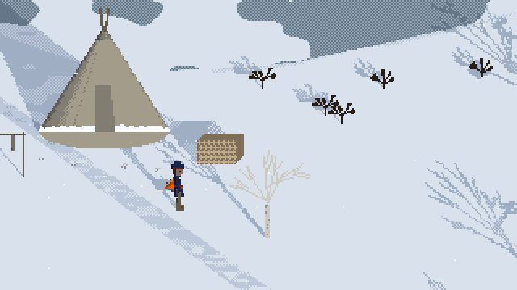
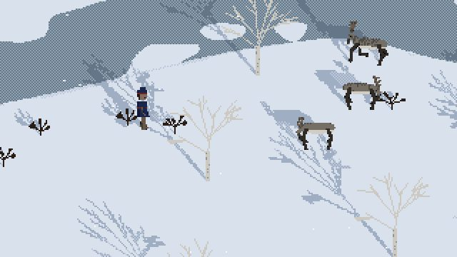
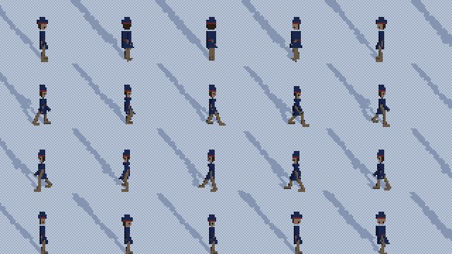
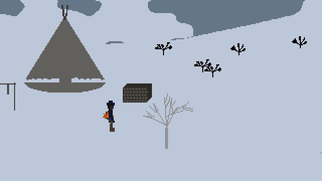

작업 흐름
- 입력
- 주제 한 줄 (장소 · 사람들 · 생명) — 예: 얼어붙은 강가의 순록 유목민 야영지
- 브리프
- 위도 · 계절 · 시각, 재질 반사율, 식물 높이, 건물 치수, 몸의 어깨높이 · 무게 · 걸음 — 줄마다 근거(측정 · 유도 · 취향)
- 컴파일
- 태양 → 램프 → 잠긴 팔레트, 해석적 지형과 단(段), 조건에 맞는 자리에 식생 · 마을, 보행 법칙으로 움직이는 사람 · 동물
- 검사
- 실제 프레임의 모든 픽셀이 팔레트 안인지, 결정성, 디딘 발 이동 · 관절 방향 · 예비 동작 · 대기 동작을 숫자로
- 출력
- 방향키로 걷는 라이브 페이지, 캐스트 시트, 스틸, 1080p 투어 MP4
node pixel-world-compiler/scripts/new-world.mjs my-world --from tundra-camp
cd my-world
node ../pixel-world-compiler/scripts/check.mjs index.html
node ../pixel-world-compiler/scripts/render.mjs index.html --cast
node ../pixel-world-compiler/scripts/render.mjs index.html --stills 0,12
node ../pixel-world-compiler/scripts/render.mjs index.html요구 사항: Node + Playwright Chromium, MP4에는 ffmpeg. npm 설치와 네트워크는 필요 없습니다. 단계별 순서는 SKILL.md에 있습니다.
샘플
같은 컴파일러에 표만 바꿔 넣은 두 세계와 템플릿 세계입니다. 위도와 재질이 바뀌자 팔레트, 그림자 길이, 물이 함께 바뀝니다. 카드를 누르면 그 세계의 라이브 페이지(방향키로 걷기)나 캐스트 시트가 열립니다.
툰드라 야영지 69° N · 3월 중순 · 오전 10:30
태양 고도 17.4°, 그림자는 높이의 3.2배로 북북서를 향합니다. 같은 레일리 계산에서 볕은 따뜻하고 그늘은 푸릅니다.

세계 · 24초 투어야영지tundra-camp
라부 두 채(지름 5.2 · 4.2 m), 강에서 8 m 떨어진 마른 둔덕에 자리 잡음

세계 · 16초강둑의 순록 떼reindeer on the bank
어깨높이 1.0–1.12 m, 힐데브란드 측면 순서 걸음(lag 0.25, duty 0.7)

캐스트 시트목동 · 순록?sheet=cast
여덟 방향, 양쪽 걷기, 대기, 제자리 돌기(발 딛기), 큰 동작 양쪽

법칙 보기 · ?pass=flat빛을 끈 재질materials without light
스프라이트는 색이 아니라 재질 · 법선 · 차폐를 저장
계단식 논 마을 25° N · 6월 하지 · 오전 9:30
태양 고도 56°, 그림자는 짧고 서쪽으로 떨어지며 산란광이 0.14뿐이라 그늘이 깊습니다. 카메라를 향한 둑의 단면은 기하로 어둡습니다.
템플릿 세계 45° N · 오전
new-world.mjs가 주는 최소 세계입니다. 연못, 집, 참나무, 사람과 염소 하나씩이 들어 있고, 검사를 통과하며, 줄마다 근거를 바꿔 쓰는 틀입니다.
실제 작품
이 스킬이 방법을 가져온 원본입니다. 북방림 · 초원 · 늪 · 사막 · 동굴 다섯 세계를 WebGL로 컴파일합니다. 이 스킬은 그 방법을 Canvas 2D로 다시 쓰고, 주제 → 브리프 → 표 → 검사의 흐름으로 만들었습니다.
링크
- SKILL.md 워크플로
- 폴더 lib · scripts · references · examples
- README.md 빠른 시작
- references/BRIEF.md 브리프 틀과 스틸 검토 기준
- references/LAWS.md 권위 · 다섯 종류의 규칙 · 줄 조사법
- references/API.md 세계 표의 모든 필드 · 새 형태 등록
- references/LESSONS.md 겪은 문제와 해결